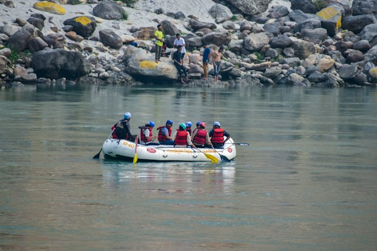

1. Family River Adventure
Perfect for beginners, families, and groups who want to experience rafting at a comfortable pace. Enjoy gentle rapids, scenic river views, and guidance from an experienced trip leader.
- Difficulty: Beginner
- Duration: 2 hours
- Best for: Families and first-timers
- Includes: Raft, paddle, life jacket, helmet, and guide